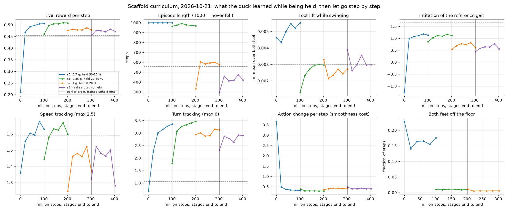
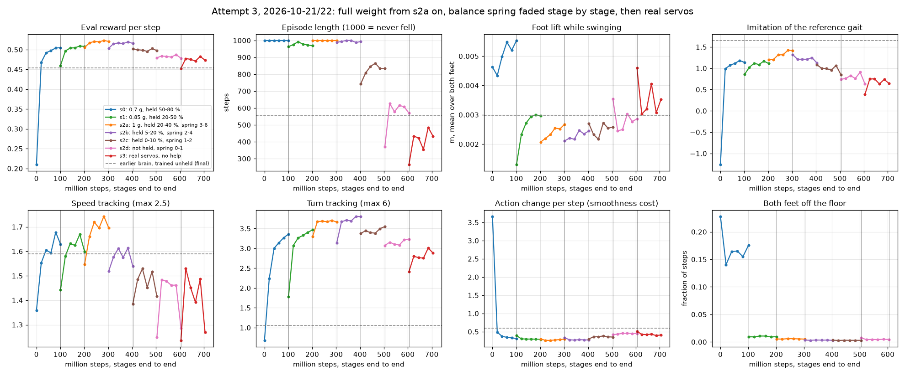

A curriculum that holds the duck up like a toddler, then lets go a little per stage. Smoother, slower joints throughout (8 Hz action filter, 4 rad/s motor limit, acceleration cost) so the real duck's jitter goes away.
2026-10-21 · attempt 2 complete (s0 → s3, 400 M steps, 4 h on the RTX 4060) · attempt 3 complete 2026-10-22 02:03 (s2a → s3, 500 M steps, 4.6 h)
Where it stands
works
Held, it walks
Carrying only 20 % of its weight at 0.85 g, the s1 brain walks forward at 0.07 m/s, steps 4 times a second, turns at the full commanded rate.
Both feet on the floor 98 % of the time, so it is walking, not hanging.
works
Smooth and steady unheld
Standing jitter 0.1–0.2 (earlier brains 4–6).
Turns 44–50 deg/s with no falls, where the earlier brain fell in the head-swing test.
not yet
Let go, it steps in place
At full gravity it still lifts its feet on a forward command, but does not move: 0.00–0.01 m/s against the earlier brain's 0.11.
It rises onto its toes when stepping, a habit from leaning on the harness.
not yet
Attempt 3: the gait transfers, push recovery does not
Full weight from s2a on, spring faded over s2a–s2d, then real servos. The walk survived down to a spring of 1 N·m/rad (0.03–0.08 m/s held), then became marching in place once the spring was gone.
Every stage without a spring ends its episodes at the first push. Next attempt: ramp the pushes with the spring and rebalance alive (20/step) against speed (2.5/step).
The harness
Three strings, each sampled fresh per episode from the stage's range so a stage always contains the next stage's easiest cases: an upward force on the trunk that carries a fraction of the duck's weight (with vertical damping, like a jolly jumper), a spring-damper torque that turns the trunk back upright (hands on the shoulders), and a string on the head that takes part of the carried weight through the head. Gravity itself was also reduced in the first two stages. Nothing pushes it along: it has to walk by itself.
stage
gravity
weight carried
upright spring (N·m/rad)
head strings
servos
unheld result
s0
0.7 g
50–80 %
3–6
50–100 %
model
stands, turns 30 deg/s, falls when turning
s1
0.85 g
20–50 %
1–3
0–50 %
model
stands, turns 44/48 deg/s, no falls
s2
1 g
0–20 %
0–1
0
model
stands, turns 47/50, no falls, steps in place
s3
1 g
none
none
none
real (1.6–2.1 N·m, kp 1.1–1.8)
stands, turns 44/46, no falls
What each brain does when let go
Full gravity, real servo torque (1.86 N·m), the same command routine for every brain. Left: the earlier brain from report 1, which walks forward but jitters. Then s1, s2 and s3 of the curriculum: smooth, upright, turning well, not going anywhere.
What it does while held
The s1 brain inside the training simulator at 0.85 g. The yellow strings are the harness; thicker means more weight carried. Held by 50 % (left) or 20 % (middle) of its weight it walks forward and turns on command. Let go (right) it lunges forward and falls within two seconds.The s2 brain at full gravity with the most help s2 ever gave (left) and none (right). It steps but stays in place, and the fall on the right is the simulator's periodic shove (0.1–1 m/s every 5–10 s), which also ends most training episodes.
Training curves

Evaluation metrics per step, the four stages end to end. Held (blue, green) the duck beats the earlier brain on reward, turning and imitation with half the action change. The hand-over to full gravity (orange) is where it stalls: episodes shorten to about 600 of 1000 steps and stay there, foot lift and imitation drop, and the real-servo stage (red) does not recover them. The step from s1 to s2 removed gravity relief, most of the support and the balance spring at once; attempt 3 takes them away one at a time.
Attempt 3: full weight first, hands held, then let go
Restarted from the s1 brain. Gravity goes to 1 g at once; the duck carries 60–80 % of its weight in s2a, then all of it, while the upright spring (hands on the shoulders) stays at 3–6 N·m/rad and is faded over s2b (2–4), s2c (1–2) and s2d (0–1) before the real-servo stage.
The s2a brain at full gravity. Held as in s2a (left) and with hands only (middle, no weight carried, spring 2) it walks forward at about 0.07 m/s and turns on command. Let go (right) it lunges forward and falls within two seconds. Measured over the whole ladder: any spring from 1 to 4.5 N·m/rad is enough for it to walk, none at all and it falls. The spring is the crutch the next stages take away.The s2b brain (held 5–20 %, spring 2–4), one stage later. It has stopped stepping forward: on the 0.15 m/s command it stands in all three columns, lifting a foot about once every two seconds instead of four times a second. It still turns on command. With a spring of 1 or less it drifts backwards at 0.05 m/s and tips over; let go (right) it falls during the turn. Unheld score: no forward speed, turn 52/42 deg/s, survived 5 of 8 pushes, two falls.The s2c brain (held 0–10 %, spring 1–2). The forward walk is back: 0.08 m/s held, 0.05–0.06 m/s with only a spring of 0.5 to 1, and 0.04 m/s with no help at all until the first push knocks it over. Standing without a spring it shuffles backwards at 0.05 m/s and falls at the first push, so the balance it still lacks is the standing kind. Unheld at real servo torque it stands instead of stepping (1.86 N·m is below what the model servos gave it in training), turns 48/52 deg/s, standing jitter 0.02, survived 2 of 8 pushes.The s2d brain (nothing carried, spring 0–1). With a spring of 1 it still walks at 0.03 m/s; with less it steps at 4.7 steps/s but gains no ground, and standing it shuffles backwards at 0.05 m/s. Every column without the spring of 1 falls at the first push. Unheld at real servo torque: stands on every speed command, turns 57/57 deg/s, standing jitter 0.03, survived 3 of 8 pushes, no falls in the speed test.Attempt 3 let go: full gravity, real servo torque (1.86 N·m), the same routine for every brain. Left the earlier brain from report 1, then s2a, s2d and the final s3. The three curriculum brains stand smoothly, turn at 50–57 deg/s and do not walk at this torque.
stage, unheld at 1.86 N·m
forward m/s
turn deg/s
standing jitter
15 N pushes survived
falls in test
earlier brain (report 1)
0.11
40–50
4–6
–
head-swing test
s2a
0.00
48 / 53
0.02
8 / 8
none
s2b
0.00
52 / 42
0.11
5 / 8
two
s2c
0.00
48 / 52
0.02
2 / 8
two
s2d
0.00
57 / 57
0.03
3 / 8
none
s3
0.00
56 / 49
0.20
3 / 8
none

Attempt 3 curves, updated after each stage. s2a (orange): never fell while held at full weight, imitation and turn tracking above every earlier stage. s2b (purple): still never falls while held, but imitation and speed tracking fall back to s1 levels while turn tracking keeps climbing. It traded the walk for a safer stand, with 20 reward per step for staying alive against at most 2.5 for speed. s2c (brown): the walk returned, but with the spring down to 1–2 it falls to pushes about once per episode (length 830) and the per-step rewards drop with it. s2d (pink): without the spring episodes last about 600 steps, the same plateau attempt 2's s2 hit, and speed tracking is now below the earlier unheld brain. s3 (red): real servo torque on top, episodes of 350–480 steps, every per-step reward at its lowest of the run. In the s3 env it steps 4.3 times a second on a forward command and gains nothing, then falls at the first push.
What attempt 3 showed. The weight support stopped mattering after s2a: the s2a brain walked with no weight carried as long as any spring was present. The spring then came off in three steps and the walk survived down to 1 N·m/rad. What never transferred is recovery from the env's pushes (0.1–1.0 m/s every 5–10 s). With no spring a push ends the episode, and with 20 reward per step for staying alive against at most 2.5 for speed, the optimizer settles on stepping in place. Attempt 2 reached the same 600-step plateau by a different route. The next attempt should leave the harness as it is and change what the harness was hiding: start the pushes small and ramp them up as the spring fades, and cut the alive reward so that a walk that risks a push is still worth more than a stand that does not.
The leading hand, tried on the s3 brain before training with it
A new scaffold term (HAND, 2026-10-22): a horizontal spring from a point 10 cm above the trunk's centre of mass to a "hand" that walks ahead at the commanded speed, capped at a fraction of body weight (the duck weighs 2.1 kg, so 10 % is 2.1 N), reaching its cap 3 cm behind the hand, the hand never more than 8 cm ahead. HAND_ROLL tilts the upright target toward the reference gait's stance foot. Both are drawn below as the blue string. Everything here is the final s3 brain, untrained for the hand, at real servo torque (1.86 N·m).
The hand alone. Any strength from 10 % to 50 % tips the duck over forward within two seconds of the forward command; a stronger hand only falls more slowly. Without the hand it marches in place until the first push.The hand with the upright spring. At 5–10 % with a spring of 3 or 6 the duck trots after the hand at 0.05 m/s for the whole routine without falling, the hand at its 8 cm limit the whole time. Spring 1.5 is not enough (falls at two seconds). A hand of 15 % or more with the spring drags the duck along at the commanded speed without steps, crouching, until it falls.
s3 brain, 1.86 N·m, forward 0.15 m/s
forward m/s
steps / s
outcome
no help
0.00
4.4
marches in place, falls at the first push (7.7 s)
hand 10 %
–
–
tips forward, down in 1.2 s
hand 50 %
–
–
tips forward, down in 1.8 s
hand 5 % + spring 3
0.048
4.5
walks, no fall, hand 8 cm ahead
hand 10 % + spring 3
0.045
5.8
walks, no fall
hand 10 % + spring 6
0.049
5.8
walks, no fall
hand 10 % + spring 3 + roll 0.1
0.058
4.9
walks, no fall
hand 10 % + spring 1.5
–
–
falls at 2.0 s
hand 15 % + spring 3
0.21
2.2
dragged, crouches, falls at 2.7 s
hand 35 % + spring 3
0.18
1.2
dragged, falls at 2.6 s
The imitation reference gait, played back kinematically with the base fixed: the motion the imitation reward compares against. Period 0.54 s, so 3.7 steps a second. The caption shows the reference's own foot-contact flags. Note the zero-command reference also marches in place.
Two bugs found on the way
Both showed up as the duck floating with its feet off the floor, visible only by rolling the brain out inside the scaffolded simulator (train_pg/held_rollout.py). First, the support used the nominal weight while the mass randomiser makes some ducks 28 % lighter, so light ducks were lifted clean off the floor and attempt 1 learned to hang. Second, the trunk and head supports added up, so the top of s0's range carried 99 % of the weight. Both are fixed; the per-episode "both feet off the floor" metric now stays near zero.
Files
sim/curriculum.sh (stages) · sim/train_pg/runs/cur_s*.score (scorecards) · sim/train_pg/runs3/ (attempt 3) · sim/make_curriculum_plots.py · sim/render_video.py · sim/train_pg/render_held.py · deploy with cutoff_frequency=8 and max motor velocity 4 rad/s